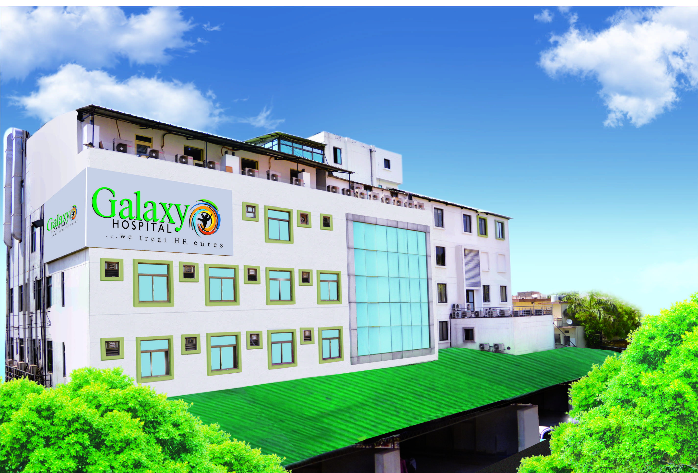

Galaxy Hospital-Varanasi

Salient features
- This Hospital is an ISO approved and the ISO Registration no. is ISO 9001:2008
- 24×7 services include Emergency, Multi slice CT, USG, Colour Doppler, Digital X-ray, Portable X-ray etc.
- This Hospital is also having most of the Endoscopic set up and other specialized equipment
- At Present this Hospital is a 150-bed unit that includes Cardiac Care Unit, Intensive Care Unit and all facility
Visit here
Galaxy Hospital's Website
Services Provided
- Nuerology and Nuerosurgery
- Cardiology
- General Medicine
- Nephrology and Urology
- T.B. and Chest
- Orhopedics
- Laproscopy and general Surgery
- Anaisthesia and Critical care
Our Doctor's Team
- Dr. Vishwesh Dutt Tiwari(Nuero surgeon)
- Dr. Rajeev Kumar Gupta
- Dr.Ajay Kumar Pandey(Cardiologist)
- Dr.Dhananjay Kumar Sinha(Nephrologist)
- Dr.S.K. Poddar(Nuerology)
- Dr.Vinay Kumar Pathak(Pathology)
- Dr. Prashant Sahai(Anaesthetic and Critical Care)
- Dr.Mayank Agrawal(T.B. and chest)
- Dr.Vineet Agrawal(Cardiologist)
Contact us
- Address:PLOT 4-7,Dayal Enclave,Mahmoorganj,Varanasi-221010
- Phone:8874205817(Emergency)
- Landline:0542-2221-444
- Email us:patient.care@galaxyhospitalvaranasi.com